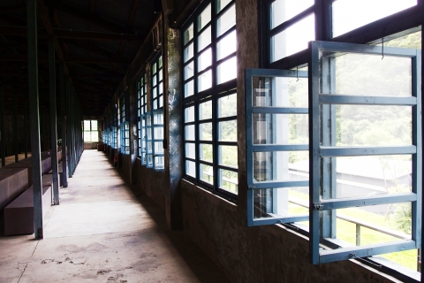

北科老茶廠舊廠介紹
北科老茶廠，起源於1899年日本三井合名會社來台開拓茶園，在1926年於大溪水流東地區興建新式機械製茶工廠，即當時的角板山工廠，
後於1946年改名為現在為人熟知的「北科茶廠」。在當時台茶興盛，外銷歐美達到巔峰，將茶奉為「黑金」的年代裡，北科茶廠在台灣早期製茶產業中，
十足占有舉足輕重的地位。無奈1956年一場大火，茶廠幾乎付諸一炬所幸當年老蔣總統在前往角板山行館時，途中路經卻不見原本熟悉的茶廠，詢問原委後，
下令工兵全力協助重建下，才得以讓這片寶貴的歷史遺產留存至今。
自2010年開始，台灣農林全面修繕整建，保留了老茶廠挑高建築的老滋老味，木造衍架、整排藍灰色窗櫺、被踩到平滑光亮的水泥地板，
甚至在石牆及原木樑柱上都還能窺見斑駁的歷史痕跡，一切原汁原味，沒有多加修飾，處處流溢著古樸懷舊況味，就為了完美重現老茶廠百年雋永光陰。
午後時分，遊逛其間，在徐徐微風清拂下，悠哉坐擁滿山綠意竹林，呼吸來自林間光合作用的天然饋禮，在洋溢庭園逸趣的靜水池區，輕遊隨想；
在樂音流洩的茶書屋內，染上一身的書卷茶氣；在老茶廠特意營造的靜美空間裡，有茶、有書、有人文，透過建築的無聲氣息與光影，將老宅的溫度傳遞給到訪的旅人，
在推開門的瞬間，能一同領會做茶人對在地文化的真誠照顧，讓大溪重新演繹往昔令人懷念的茶聲、茶香與茶韻風采。

